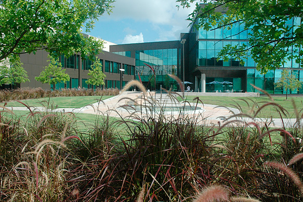

Х'юстон
Х'ю́стон, Г'ю́стон (англ. Houston) — четверте за кількістю жителів місто в Сполучених Штатах Америки та найбільше місто в штаті Техас із населенням 2 319 603 людини на 2017 рік. Місто є адміністративним центром округу Гарріс і також належить до території округів Форт-Бенд і Монтгомері. Воно є головним економічним центром агломерації Великого Х'юстона із сумарною кількістю населення 6 772 470 людей на 2016 рік. Місто лежить за 50 кілометрів від Мексиканської затоки на прибережній рівнині.
Х'юстон був заснований 30 серпня 1836 року та ввійшов до складу Республіки Техас 5 червня 1837 року, названий на честь Семюела Х'юстона — головнокомандувача армії Техасу під час Техаської революції та президента Республіки Техас. Швидкий розвиток порту та залізниці в XIX столітті, а також початок видобування нафти та прийдешній розвиток нафтової промисловости у XX столітті спричинилися до швидкого зростання кількости населення. В 1960-х роках кількість жителів перейшла за один мільйон людей, а в 2000-х — два мільйони.
Місто є провідним світовим центром енергетичної промисловости, а економіка міста також представлена підприємствами в галузі аеронавтики, транспорту та охорони здоров'я. Найважливішими об'єктами для економіки й інфраструктури міста є космічний центр імені Ліндона Джонсона, найбільший американський міжнародний торговий порт, Х'юстонський судноплавний канал, найбільший у світі Техаський медичний центр.
Зміст
1. Історія
1.1 Походження назви
2. Географія
2.1 Клімат
3. Демографія
4. Адміністративний устрій
4.1 Зовнішні зв'язки
4.2 Офіційні символи
5. Транспорт
5.1 Автомобільний транспорт
5.2 Громадський транспорт, велосипеди
5.3 Авіаційне та залізничне сполучення
6. Міський благоустрій
6.1 Житловий фонд
6.2 Озеленення
6.3 Водопостачання та енергопостачання
7. Соціальна сфера
7.1 Охорона здоров'я
7.2 Освіта
7.3 Злочинність
8. Культура
9. Спорт
10. Відомі люди
Історія
Походження назви

|
Місто назване на честь Семюела Г'юстона — головнокомандувача армії Техасу під час Техаської революції (1835—1836) та президента Республіки Техас (1836—1838, 1841—1844).
Крім офіційної місто має ще 12 назв. Найпоширеніша назва Х'юстона — «Космічне місто» (англ. Space City). Назва дана через те, що тут розміщений космічний центр імені Ліндона Джонсона.
В американському розмовному мовленні популярною є фраза: «Х'юстоне, у нас проблема» (англ. Houston, we’ve had a problem), що з'явилося після невдалої місії Аполлон-13. У Х'юстоні відбувалися зйомки фільму «Аполлон-13», в основу сюжету якого покладені справжні події місії.
Географія
Х'юстон має такі координати 29°46′50″ пн. ш. 95°23′11″ зх. д. (29.780472, -95.386342). За даними Бюро перепису населення США в 2010 році місто мало площу 1625,21 км², з яких 1552,93 км² — суходіл та 72,28 км² — водойми. В 2017 році площа становила 1724,87 км², з яких 1648,56 км² — суходіл та 76,31 км² — водойми.
|
Клімат
| Клімат : Х'юстон |
| Показник |
Січ. |
Лют. |
Бер. |
Квіт. |
Трав. |
Черв. |
Лип. |
Серп. |
Вер. |
Жовт. |
Лист. |
Груд. |
Рік |
| Абсолютний максимум, °C |
29,4 |
30,6 |
35,6 |
34,4 |
37,8 |
40,0 |
40,0 |
42,8 |
38,9 |
35,6 |
32,2 |
28,9 |
42,8 |
| Середній максимум, °C |
17,2 |
19,1 |
22,8 |
26,4 |
30,2 |
33,0 |
34,3 |
34,7 |
32,1 |
27,8 |
22,5 |
17,9 |
26,5 |
| Середня температура, °C |
11,0 |
13,0 |
16,8 |
20,3 |
24,3 |
27,4 |
28,7 |
28,5 |
26,1 |
21,3 |
16,1 |
12,1 |
20,5 |
| Середній мінімум, °C |
6,2 |
8,1 |
11,4 |
15,2 |
19,8 |
22,9 |
23,9 |
23,8 |
21,0 |
16,1 |
11,2 |
7,0 |
15,6 |
| Абсолютний мінімум, °C |
-12,2 |
-10 |
-5,6 |
-5,6 |
6,7 |
13,3 |
7,2 |
17,8 |
10,0 |
-0,6 |
-3,9 |
-12,8 |
-12,8 |
| Норма опадів, мм |
86 |
81 |
87 |
84 |
129 |
151 |
96 |
96 |
104 |
145 |
110 |
95 |
1165 |
| Днів з опадами |
8,7 |
8,0 |
6,5 |
8,6 |
7,2 |
7,6 |
9,1 |
8,9 |
7,4 |
8,1 |
8,8 |
7,4 |
96,2 |
| Джерело: NOAA (sun 1961–1990) |
Демографія
Згідно з переписом 2010 року, у місті мешкала 2 099 451 особа в 782 643 домогосподарствах у складі 481 570 родин. Густота населення становила 1292 особи/км². Було 892646 помешкань (549/км²).
Расовий склад населення:
- 50,5 % — білих
- 23,7 % — чорних або афроамериканців
- 6,0 % — азійців
- 0,7 % — корінних американців
- 0,1 % — вихідців з тихоокеанських островів
- 15,7 % — осіб інших рас
До двох чи більше рас належало 3,3 %. Частка іспаномовних становила 43,8 % від усіх жителів.
За віковим діапазоном населення розподілялося таким чином: 25,9 % — особи молодші 18 років, 65,1 % — особи у віці 18—64 років, 9,0 % — особи у віці 65 років та старші. Медіана віку мешканця становила 32,1 року. На 100 осіб жіночої статі у місті припадало 100,7 чоловіків; на 100 жінок у віці від 18 років та старших — 99,6 чоловіків також старших 18 років.
Середній дохід на одне домашнє господарство становив 74 322 долари США (медіана — 46 187), а середній дохід на одну сім'ю — 84 040 доларів (медіана — 51 046). Медіана доходів становила 40 752 долари для чоловіків та 35 841 долар для жінок. За межею бідности перебувало 22,5 % осіб, у тому числі 35,1 % дітей у віці до 18 років та 14,1 % осіб у віці 65 років та старших.
Цивільне працевлаштоване населення становило 1 074 332 особи. Основні галузі зайнятости: освіта, охорона здоров'я та соціальна допомога — 18,9 %, науковці, спеціалісти, менеджери — 14,3 %, роздрібна торгівля — 10,7 %, будівництво — 10,0 %.
Адміністративний устрій
Головою Х'юстона є мер. Він є головною посадовою особою, відповідає за загальне керівництво містом, підписує всі постанови і закони, прийняті муніципальною Радою і стежить за тим, щоб вони виконувалися. Крім цього, мер представляє раді річний бюджет міста для схвалення, а потім надає раді інформацію про його виконання. Голова міста обирається громадянами шляхом голосування максимум на два терміни по 4 роки кожен. З 2 січня 2016 року пост мера займає Сильвестр Тернер — член Демократичної партії. Міська (Муніципальна) рада Х'юстона складається з одинадцяти осіб, обраних від одинадцяти виборчих округів, і п'яти осіб, обраних від усього міста в цілому. Члени Ради обираються на такий самий термін, як і мер. До повноважень Ради входять призначення обраного мера, зміна і підтвердження бюджету міста, управління міською нерухомістю, асигнування і випуск облігацій, укладення контрактів і схвалення міських витрат на суму понад $50 тисяч. Міський контролер, в обов'язки якого входить розподіляти кошти і фінансувати міський бюджет, обирається незалежно від мера і ради. З 2 січня 2016 року цю посаду обіймає Кріс Бравн.
Х'юстон — найбільше місто США без адміністративного поділу. Місто є адміністративним центром округу Гарріс, а також головним економічним центром Великого Х'юстона.
Зовнішні зв'язки
У мерії Х'юстона є відділ із міжнародної торгівлі та розвитку, що займається взаємодією адміністрації міста з Міжнародним бізнес-спільнотою. У 2016 році Х'юстон відвідало 125 іноземних делегацій із 46 країн. У Х'юстоні розташовані консульства 82 країн. За кількістю консульств місто займає в США третє місце після Нью-Йорка та Лос-Анджелеса. На цей час у міста є 18 міст-побратимів.
З 9 по 11 липня 1990 року в місті відбувся 16-й саміт G7. Щорічно у Х'юстоні проводяться міжнародні конференції, такі як Offshore Technology Conference і CERAWeek, де обговорюються питання енергетики.
Понад 430 Х'юстонських компаній мають офіси за кордоном, а також в місті розташовані офіси 800 зарубіжних компаній.
Офіційні символи
Прапор міста був прийнятий у 1915 році. На ньому зображена п'ятипроменева зірка на синьому тлі. Всередині зірки — паровоз типу 2-2-0 (за американською класифікацією) — 4-4-0 «American». Це пов'язано з тим, що в кінці XIX — початку XX ст. паровози даного типу були широко поширені на американському континенті, зокрема саме вони водили поїзди в місто. Новий прапор являв собою трохи змінений попередній варіант прапора міста, прийнятий ще в 1840 році. Причиною була зміна локомотивів: паровоз типу 2-1-0, поширений у 1830—1850 рр., був замінений на паровоз типу 2-2-0, зображений на прапорі по даний час.
Печатка Х'юстона була затверджена міською радою міста 24 лютого 1840 року. Печатка була розроблена колишнім мером Х'юстона Френсісом Муром-молодшим. Самотня зірка — один із символів Техасу і її присутність на печатці позначає приналежність міста до Республіки Техас. Локомотив ототожнює прогрес, уособленням якого залізничний рух і був під час прийняття печатки. Місто слугувало залізничним центром протягом багатьох років. Плуг символізує сільське господарство Техасу.
Транспорт
Автомобільний транспорт
Переважним видом транспорту є автомобіль, оскільки на ньому на роботу їздять приблизно 75 % жителів міста. Загальна протяжність мережі автомобільних доріг — 6 768,9 км. Через місто проходять дві важливі державні магістралі: Interstate 45 і Interstate 10, які зв'язують південь з північчю і захід зі сходом відповідно. У Х'юстоні є два великих транспортних кільця. Перше — Interstate 610, а друге — Sam Houston Tollway, будівництво якого завершилося у 2011 році. Крім цього, ведеться будівництво третього транспортного кільця довжиною 286 км — Texas State Highway 99, яке завершиться у 2023 році й стане найбільшою кільцевою автодорогою в США.
Основною проблемою транспорту Х'юстона є затори. Найбільш завантаженими трасами є Interstate 45 і 10, а також перше транспортне кільце. У 2014 році жителі Х'юстона витратили 61 годину на стояння в пробках, це восьме місце після Вашингтона, Лос-Анджелеса, Сан-Франциско, Нью-Йорка, Бостона, Сієтла і Чикаго.
Громадський транспорт, велосипеди
Основним оператором послуг громадського транспорту у Х'юстоні, представленого автобусами і швидкісним трамваєм, є компанія METRO. Щоденний пасажиропотік в громадському транспорті міста в другому кварталі 2016 року склав 219,3 тисячі осіб, з них 58 тисяч — на швидкісному трамваї.
Автобусний рух відкрито в 1979 році. В даний час діє 74 міських маршрутів і 12 приміських, а також швидкісний маршрут Quickline (№ 402). У місті діє сучасний трамвай, званий METRORail, запущений 1 січня 2004 року. Трамвайна система складається з 3 ліній загальною протяжністю в 36,5 км і 37 станцій.
У 2012 році з'явилася система спільного використання велосипедів — Houston B-cycle, що налічує 31 станцію і 225 велосипедів, послугами якої з січня по серпень 2016 року скористалися понад 73 тис. жителів.
Авіаційне та залізничне сполучення
У Х'юстоні знаходяться три аеропорти: Х'юстон Інтерконтинентал імені Джорджа Буша, Еллінґтон-Філд і летовище імені Вільяма П. Гоббі. Аеропорт Х'юстон Інтерконтинентал був відкритий 8 червня 1969 року для комерційних авіаперевезень, а пізніше почав обслуговувати частину пасажирських рейсів з аеропорту імені Вільяма П. Гоббі. Пасажиропотік у 2016 році склав 41,6 млн осіб (43 місце серед аеропортів світу даному показнику і 14 місце — серед аеропортів США). В середньому аеропорт щодня відправляє і приймає понад 700 рейсів. Аеропорт імені Вільяма Гоббі був побудований в 1927 році як приватний аеродром. До кінця Другої світової війни аеропорт був реконструйований, а в 1950 році був прийнятий перший міжнародний рейс. У 1969 році всі рейси були перенесені в новий аеропорт Х'юстон Інтерконтинентал. В даний час позиціонується як реґіональний центр корпоративної та особистої авіації, а також як запасний аеропорт для внутрішніх рейсів. За 2015 рік обслужив 11,84 млн пасажирів. На території аеропорту знаходиться його власний музей. Аеропорт Еллінгтон був побудований в 1917 році. Під час Першої і Другої світових військовий аеропорт виконував функцію тренувальної бази, а на даний момент, як і раніше використовується для військових цілей, а також для потреб авіації НАСА, приватної та цивільної авіації.
Через місто проходить залізнична пасажирська система Amtrak. Х'юстонська станція є частиною лінії Sunset Limited і у фінансовому 2016 році обслужила 19,8 тис. пасажирів.
Міський благоустрій
Житловий фонд
На 2012 рік в Х'юстоні налічувалося 902 153 будинків, з них 15 % побудовано після 1999 року. 12,3 % з усіх будинків було виставлено на продаж, оренду, орендовано, або в них не було постійних мешканців з інших причин. Також в місті спостерігається висока мобільність населення, оскільки у 51,8 % х'юстонців останній переїзд був у 2000—2014 роках.
За міський житловий фонд відповідає компанія «Х'юстонське управління житлового господарства» (Houston Housing Authority — ННА), керована місцевою владою. Компанія з'явилася в 1938 році, а в 1970-х і 1980-х роках відбувалося розширення організації в міру зростання населення. У Х'юстоні реалізується два види житлових програм, орієнтованих на верстви населення з низьким достатком, на літніх людей та інвалідів: «засвідкова програма» і «державне житло». «Засвідкова програма» пропонує пільгову оплату оренди будинку, у цьому випадку сім'я платить оренду в розмірі 30-40 % від свого доходу. Програма «державне житло» реалізовує в Х'юстоні 8-й пункт федерального закону про житло (1937 рік), що передбачає пільгове виділення будинків незахищеним верствам населення. Даною програмою скористалося понад 60 тисяч х'юстонців.
Озеленення
За даними некомерційної організації з охорони земельних ресурсів «The Trust for Public Land» лісопаркова зона Х'юстона курується п'ятьма різними службами. Велика частина території зелених насаджень міста перебуває у сфері відповідальности х'юстонського департаменту парків і відпочинку. Залишилася Паркова площа, що знаходиться в межах міста, розподілена між іншими природоохоронними органами. Таким чином, на 2016 рік вся територія зелених угідь займала 13,8 % від загальної території займаної містом, а сам Х'юстон займав перше місце серед усіх міст-мільйонників США по території зелених угідь. Всього в місті налічується 337 парків.
Водопостачання та енергопостачання
Система водопостачання Х'юстона включає водопровідну мережу Х'юстона довжиною 11,3 тис. км, три водоочисні станції та 92 помпові станції. Щодня жителями міста витрачається трохи більше 1,5 млрд літрів води. Водосховища Х'юстон, Конро, Лівінґстон — основні джерела питної води. Середня глибина свердловин із яких подається вода — 228 метрів. У воді, яка тече з кранів жителів міста, містяться 46 шкідливих хімічних речовин. У порівнянні з 2004 роком, їхня кількість скоротилася, але, попри це, Х'юстон посідає 95 місце зі 100 найбільших міст США за якістю води. Водопостачанням міста займається компанія «Drinking Water Operations». Міська каналізаційна система складається з мережі довжиною 11,2 тис. км і 124,5 тисячі люків.
За енергопостачання Х'юстона відповідає компанія «CenterPoint Energy», послугами якої користуються близько 2,1 млн жителів міста та найближчих передмість.[55] Окрім «CenterPoint Energy», іншим оператором послуг енергопостачання є «Calpine». На території агломерації Великого Х'юстона діє вісім електростанцій цієї компанії. Одна з них («Channel Energy Center») розташована в самому Х'юстоні, на березі судноплавного каналу, максимальна потужність якої — 808 МВт (базова — 723 МВт). Х'юстон має репутацію «зеленого міста», оскільки половина споживаної електроенергії містом проводиться за допомогою сонячних і вітряних установок. Всього містом витрачається 1,246 млн МВт на годину.
Соціальна сфера
Охорона здоров'я
Важливу роль в охороні здоров'я Х'юстона відіграє найбільший у світі медичний центр — Техаський медичний центр, заснований в 1945 році. Медичний центр складається з 54 установ, що забезпечують жителів міста медичною допомогою. Понад 8 млн осіб відвідує центр щорічно. Інший великий медичний центр Х'юстона — Техаський медичний центр «Меморіал Германн», де в рік проводяться 6 тисяч операцій і обслуговуються 57,3 тисячі відвідувань. Всього в місті 136 медичних установ і 21 057 ліжок. У сфері охорони здоров'я працюють 16,1 тисячі лікарів. Найбільші медичні університети Х'юстона — Медичний науково-дослідний центр Техаського університету та Онкологічний центр ім. М. Д. Андерсона Техаського університету.
З усіх хвороб у місті найпоширенішими є респіраторні та онкологічні. Головні причини смерти жителів округу Гарріс — онкологічні захворювання (22,6 %), захворювання серця (22 %), нещасні випадки (5,7 %), інсульт (5,2 %). Округ Гарріс у 2016 році зайняв 56 місце серед 254 округів Техасу за рейтингом здоров'я. Очікувана тривалість життя в окрузі Гарріс у жінок — 80,7 років; у чоловіків — 76,1 років.
|
|
|
|
|
|
|
|
Техаський медичний центр
|
|
Одна з лікарень центру «Меморіал Германн»
|
|
Онкологічний центр ім. М. Д. Андерсона
|
|
Освіта
У Х'юстоні налічується 18 шкільних округів. Х'юстонський незалежний шкільний округ (HISD) з 287 школами та 215 тис. учнями є найбільшим шкільним округом Техасу і 7-м в США. Також є чартерні школи, які не входять в шкільні округи, їх відвідують від 12 до 13 тисяч дітей. У місті — понад 300 приватних шкіл, Серед них є й релігійні. Наприклад, 59 шкіл є католицькими, вони знаходяться у віданні Архієпархії Галвестон-Х'юстона, кількість учнів у них становить близько 18 000 дітей. У 2012 році в державних школах навчалося 90,6 % від усього числа учнів, у приватних — 9,4 %.
Отримання освіти в місті надають 15 вищих навчальних закладів, а також понад 100 середньо-спеціальних закладів (коледжі, технічні та професійні училища), в яких сумарно навчаються 315 тис. студентів. Чотири університети — Х'юстонський університет, Університет Х'юстон-Клір-Лейк, Університет Х'юстон-Давнтавн та Університет Х'юстон-Вікторія утворюють Х'юстонську університетську систему. Найбільший університет і центр Х'юстонської університетської системи — Х'юстонський університет, що налічував у 2016 році 43 774 студенти, має статус громадського. Цей університет входить у число перших 300 університетів в академічному рейтингу університетів світу, а також в число 550 університетів у рейтингу світових університетів QS. Функціонують і приватні університети, найбільший з яких — університет Райса, займає 72 місце в академічному рейтингу університетів світу і 106 місце в рейтингу світових університетів QS, а також Університет святого Томаса. Всі коледжі об'єднані в три системи: Х'юстонська громадська система коледжів, система коледжів «Самотня зірка» і система коледжів Сан-Хасінто.
У місті розвивається біотехнологія. Споруджуваний науково-дослідний парк університету Техасу, орієнтований на сферу розвитку і застосування біотехнологій, — спільний проєкт Техаського онкологічного центру М. Д. Андерсона і Медичного науково-дослідного центру Техаського університету. Важливу роль у розвитку цієї галузі відіграють Техаський медичний центр і кілька біологічних університетів. Всього в діяльності біотехнології працюють понад 19 тисяч осіб. Х'юстон відіграє важливу роль у світовій космонавтиці. У місті розташовується Космічний центр імені Ліндона Джонсона, що є науково-дослідним та проєктно-конструкторським підприємством. У Х'юстоні знаходиться офіс програми будівництва космічного корабля «Оріон» для НАСА.
Х'юстон у 2016 році посів 13 місце серед міст США за рівнем світи. Проте, за рівнем освічености населення місто має лише 99 місце. В агломерації Великого Х'юстона станом на 2016 рік 31,5 % осіб мають вищу освіту (20,1 % — бакалаври, 11,4 % — магістри), в той час як 17,7 % не закінчили школу.
Університети Х'юстона
|
|
|
|
|
|

|
|
|
|
|
Х'юстонський університет
|
|
Університет Райса
|
|
Університет Х'юстон-Клір-Лейк
|
|
Університет Х'юстон-Давнтавн
|
|
Злочинність
Штат департаменту поліції Х'юстона на 2015 рік налічував 6 577 працівників (5 178 поліціянтів і 1 399 інших працівників).
Рівень злочинности в Х'юстоні з 1960-х років неухильно підвищувався. У 1970-і роки число особливо тяжких злочинів значно збільшилося на 85 % і лише за 1981 рік — на 17 %, що стало найвищим показником серед міст США. У 1970—1973 роках серійний убивця Дін Корлл зі своїми спільниками зґвалтували та вбили 28 юнаків, ці події відомі як «Х'юстонські масові вбивства» («Houston Mass Murders»). Злочинність продовжувала зростати, досягнувши найбільшої кількости злочинів у 1988—1991 роках (понад 180 000 злочинів за кожен рік). Мер Боб Ланьє, що став на пост в 1992 році, збільшив фінансування поліції, в результаті чого злочинність знизилася на 31,4 % за час його правління (1992—1997 роки). Злочинність продовжила знижуватися й надалі, у 2011 році було зафіксовано найменшу кількість вбивств з 1965 року. Згідно з даними сайту «NeighborhoodScout», у 2015 році х'юстонський район Саннісайд є другим у рейтингу злочинности по районах США.
Через близьке розташування до Мексики та наявність у місті великих аеропортів і автомобільних трас Х'юстон став одним із головних центрів США з незаконного експорту наркотиків, а також із торгівлі людьми. З грудня 2007 року по червень 2015 року у Х'юстоні було виявлено 717 випадків торгівлі людьми.
Культура
- Музей образотворчих мистецтв
- Музей сучасного мистецтва
- Х'юстонський симфонічний оркестр
- Х'юстонський фестиваль родео і скотарства (англ. The Houston Livestock Show and Rodeo)
Спорт
У Х'юстоні є три професійні команди:
- «Х'юстон Астрос» (англ. Houston Astros) грає у Головній бейсбольній лізі.
- «Х'юстон Тексанс» (англ. Houston Texans) виступає у Національній футбольній лізі.
- «Х'юстон Рокетс» (англ. Houston Rockets) грає у Національній баскетбольній асоціації.
Відомі люди
- Гіларі Дафф — американська акторка й співачка.
- Джордж Вокер Буш — 43-ій президент Сполучених Штатів Америки.
- Анна-Ніколь Сміт — американська фотомодель, акторка.
- Флоренс Відор (1895—1977) — американська акторка епохи німого кіно
- Кетрін Кросбі (* 1933) — американська співачка і акторка кіно
- Роберт Фоксворт (* 1941) — американський актор
- Лоїс Чайлз (* 1947) — американська акторка та модель
- Джон Грей (* 1951) — американський сімейний психотерапевт, викладач і письменник
- Девід Веттер (1971—1984) — хлопчик, що через рідкісне генетичне захворювання змушений був 12 років жити у знезараженому пластиковому середовищі — бульбашці-ізоляторі з полівінілхлориду.
- Бейонсе (* 1981) — американська виконавиця в стилі R&B